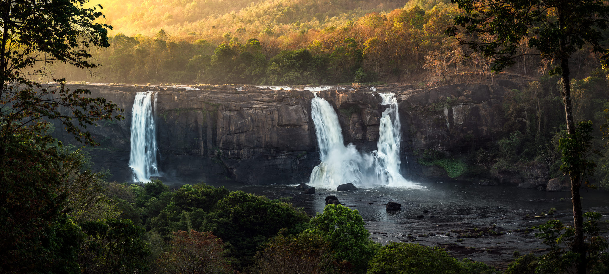
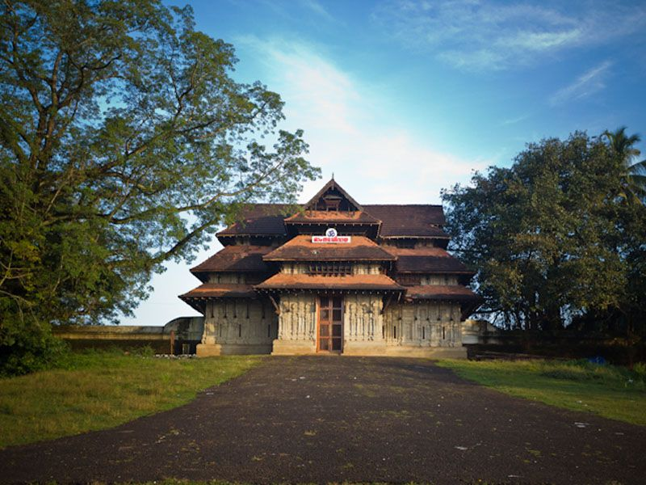

Athirapally Waterfalls
Athirappilly Falls, is situated in Athirappilly Panchayat in Chalakudy
Taluk of Thrissur District in Kerala, India on the Chalakudy River, which originates from
the upper reaches of the Western Ghats at the entrance to the Sholayar ranges.
It is the largest waterfall in Kerala, which stands tall at 80 feet.
1 / 3

2 / 3

Vadakkumnathan Temple
A visit to Thrissur is incomplete without witnessing the iconic Thrissur Pooram in the month of may,the pooram is held at the Thekkinkadu Maidanam in front of Vadakkumnathan temple. Vadakkumnathan Temple is an ancient Hindu temple dedicated to Shiva at city of Thrissur, of Kerala state in India. This temple is a classical example of the architectural style of Kerala and has one monumental tower on each of the four sides in addition to a kuttambalam
A visit to Thrissur is incomplete without witnessing the iconic Thrissur Pooram in the month of may,the pooram is held at the Thekkinkadu Maidanam in front of Vadakkumnathan temple. Vadakkumnathan Temple is an ancient Hindu temple dedicated to Shiva at city of Thrissur, of Kerala state in India. This temple is a classical example of the architectural style of Kerala and has one monumental tower on each of the four sides in addition to a kuttambalam
3 / 3

Kerala Kalamandalam
The birth of this institution marked the first institutional step in the cultural history of Kerala to start training in classical performing arts, which were until then left to the patronage of provincial kings and landlords.You can also gain in depth knowledge on the art forms of Kerala.
The birth of this institution marked the first institutional step in the cultural history of Kerala to start training in classical performing arts, which were until then left to the patronage of provincial kings and landlords.You can also gain in depth knowledge on the art forms of Kerala.